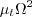
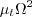

Public Access (formerly Langley Research Center)Turbulence Modeling Resource |
The Menter Baseline Turbulence Model
This web page gives detailed information
on the equations for various forms of the
Menter baseline (BSL) turbulence model.
All forms of the model given on this page are linear eddy viscosity models.
Linear models use the Boussinesq assumption for the constitutive relation:
Unless otherwise stated, for compressible flow with heat transfer this model is implemented as described on the page
Implementing Turbulence Models into the Compressible RANS Equations, with perfect gas
assumed and Pr = 0.72, Prt = 0.90, and Sutherland's law for dynamic viscosity.
Return to: Turbulence Modeling Resource Home Page "Standard" Menter Baseline
Two-Equation Model (BSL) and (BSLm)
The reference for the standard implementation of the Menter BSL
model is:
This model is almost identical to the
Menter SST model. Only one constant
()
and the expression
for turbulent eddy viscosity are different.
The two-equation model (written in conservation form) is given by the following:
Note that in the reference, the Lagrangian derivative was used, which is not identical
with the proper form of these equations as written by the author and others elsewhere. The equations have been
written above to be in proper conservation form, consistent with, e.g., Wilcox (in Turbulence Modeling for CFD,
DCW Industries, Inc., La Canada, CA, 2006), Menter et al (in Turbulence, Heat and Mass Transfer 4, 2003, pp. 625-632),
and Menter (in NASA TM 103975, 1992,
https://ntrs.nasa.gov/citations/19930013620).
and the turbulent eddy viscosity is computed from:
Each of the constants is a blend of an inner (1) and outer (2) constant, blended via:
where and Note that it is generally recommended to use a production limiter (see
Menter, F. R., "Zonal Two Equation k-omega Turbulence Models for Aerodynamic Flows,"
AIAA Paper 93-2906, July 1993,
https://doi.org/10.2514/6.1993-2906).
In this reference, the term P in the k-equation
is replaced by:
The boundary conditions recommended in the original reference are:
where "L is the approximate length of the computational domain,"
and the combination of the two farfield values should yield a freestream turbulent viscosity
between 10-5 and 10-2 times freestream laminar viscosity.
Thus, the farfield turbulence boundary conditions are somewhat open to interpretation.
Note that the turbulence variables decay (sometimes dramatically) from their set values in
the farfield for external aerodynamic problems.
The constants are:
Note: the Menter Baseline
Two-Equation Model with Vorticity Source Term (BSL-V) and (BSL-Vm)
This form of the BSL model is sometimes used because vorticity magnitude
The equations are the same as for the "standard" version (BSL),
with the exception that the term P (in both equations) is approximated with the following:
When the
Note that this approximation is similar in spirit to the Kato-Launder correction
(Kato, M. and Launder, B. E., "The Modelling of Turbulent Flow Around Stationary and Vibrating Square Cylinders,"
9th Symposium on Turbulent Shear Flows, Kyoto, Japan, August 1993, paper 10-4), which uses
Return to: Turbulence Modeling Resource Home Page
Recent significant updates:

![\frac{\partial (\rho k)}{\partial t} + \frac{\partial (\rho u_j k)}{\partial x_j}
= \cal P - \beta^* \rho \omega k + \frac{\partial}{\partial x_j}
\left[\left(\mu + \sigma_k \mu_t \right)\frac{\partial k}{\partial x_j}\right]](sst_eqns/img2.png)


 represents constant 1
and
represents constant 1
and  represents constant 2.
Additional functions are given by:
represents constant 2.
Additional functions are given by:
![{\rm arg}_1 = {\rm min} \left[ {\rm max} \left( \frac{\sqrt{k}}{\beta^*\omega d},
\frac{500 \nu}{d^2 \omega} \right) , \frac{4 \rho \sigma_{\omega 2} k}{{\rm CD}_{k \omega} d^2} \right]](sst_eqns/img12.png)
 is the density,
is the density,
 is the
turbulent kinematic viscosity,
is the
turbulent kinematic viscosity,
 is the
molecular dynamic viscosity, and d is the distance from the field point to the nearest wall.
is the
molecular dynamic viscosity, and d is the distance from the field point to the nearest wall.


 term
in the Boussinesq approximation for tau_ij is sometimes ignored in the momentum and energy equations.
Similarly, the production term in two-equation turbulence models is often approximated by P = mu_t S2.
This expression is exact for incompressible flows and is typically
considered a very good approximation, except perhaps for very high Mach number flows (see items 4 and 7 on the page
Notes on Running the Cases with CFD, and the
Implementing Turbulence Models into the Compressible RANS Equations page).
There are various ways that these approximations can be implemented:
term
in the Boussinesq approximation for tau_ij is sometimes ignored in the momentum and energy equations.
Similarly, the production term in two-equation turbulence models is often approximated by P = mu_t S2.
This expression is exact for incompressible flows and is typically
considered a very good approximation, except perhaps for very high Mach number flows (see items 4 and 7 on the page
Notes on Running the Cases with CFD, and the
Implementing Turbulence Models into the Compressible RANS Equations page).
There are various ways that these approximations can be implemented:
term is IGNORED in tau_ij in the momentum and energy equations, and the production term is APPROXIMATED by
P = mu_t S2.
term is INCLUDED in tau_ij in the momentum and energy equations, and the production term is APPROXIMATED by
P = mu_t S2.
term is IGNORED in tau_ij in the momentum and energy equations, and the production term is THE EXACT expression.
 is usually readily available in
most Navier-Stokes codes. Furthermore, the vorticity source term is often nearly identical to the exact source
term in simple boundary layer flows, and the use of the vorticity term can avoid some numerical difficulties
sometimes associated with the use of the exact source term.
The reference for this usage is:
is usually readily available in
most Navier-Stokes codes. Furthermore, the vorticity source term is often nearly identical to the exact source
term in simple boundary layer flows, and the use of the vorticity term can avoid some numerical difficulties
sometimes associated with the use of the exact source term.
The reference for this usage is:
 term is ignored in tau_ij in the momentum and energy equations and the production term is approximated by
P = mu_t*(Omega2),
a modified naming convention should be employed: (BSL-Vm).
term is ignored in tau_ij in the momentum and energy equations and the production term is approximated by
P = mu_t*(Omega2),
a modified naming convention should be employed: (BSL-Vm).
 instead of
. Implementation of the Kato-Launder
correction should be called (BSL-KL).
If the
term is ignored in tau_ij in the momentum and energy equations and
if the
instead of
. Implementation of the Kato-Launder
correction should be called (BSL-KL).
If the
term is ignored in tau_ij in the momentum and energy equations and
if the  term in P is ignored, then the naming convention is (BSL-KLm).
term in P is ignored, then the naming convention is (BSL-KLm).
10/04/2024 - added "s" and "e" variant definitions
03/24/2021 - clarifications on use of "m" designation when P=mu_t S2 and k term ignored in momentum and energy equations
6/30/2015 - mention Pr, Pr_t, and Sutherland's law
8/29/2013 - mention of Kato-Launder correction
Page Curators: Christopher Rumsey,
Ethan Vogel,
Clark Pederson
Last Updated: 10/04/2024